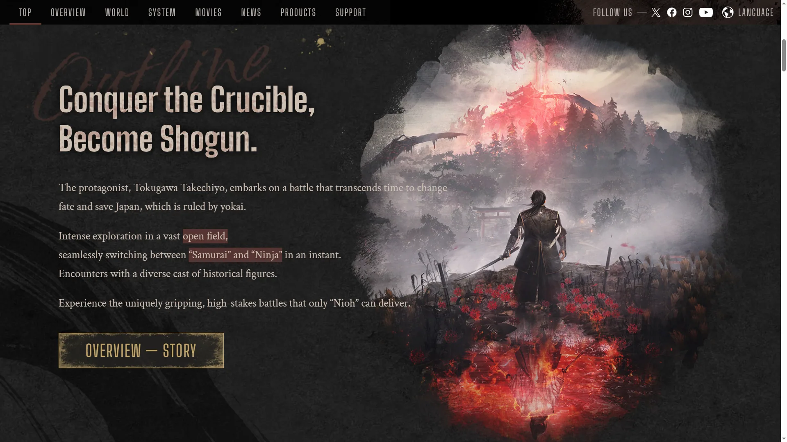
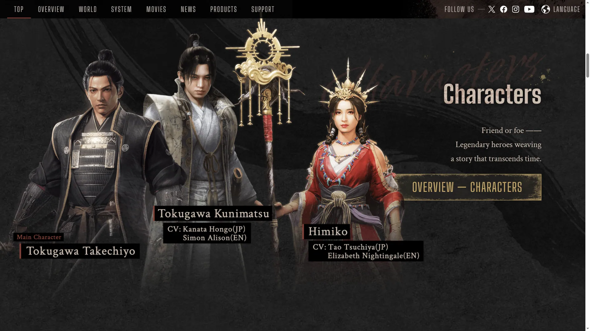
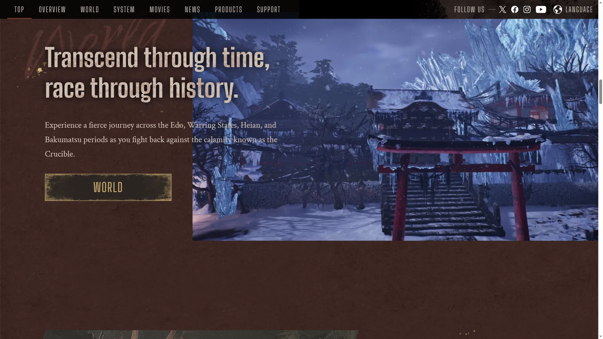
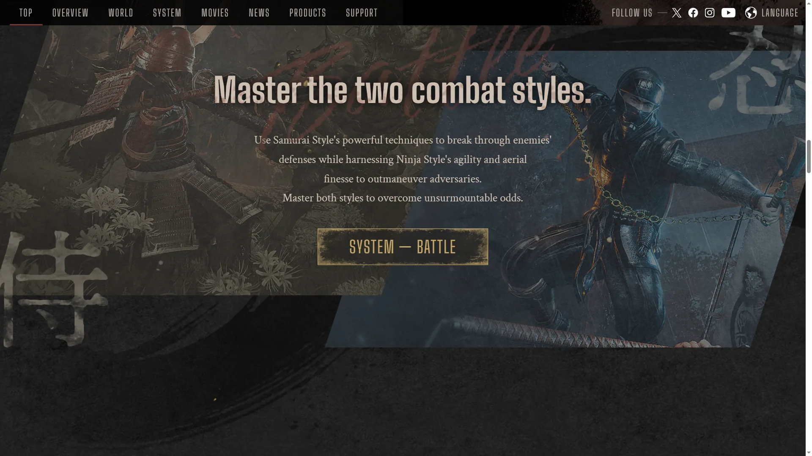
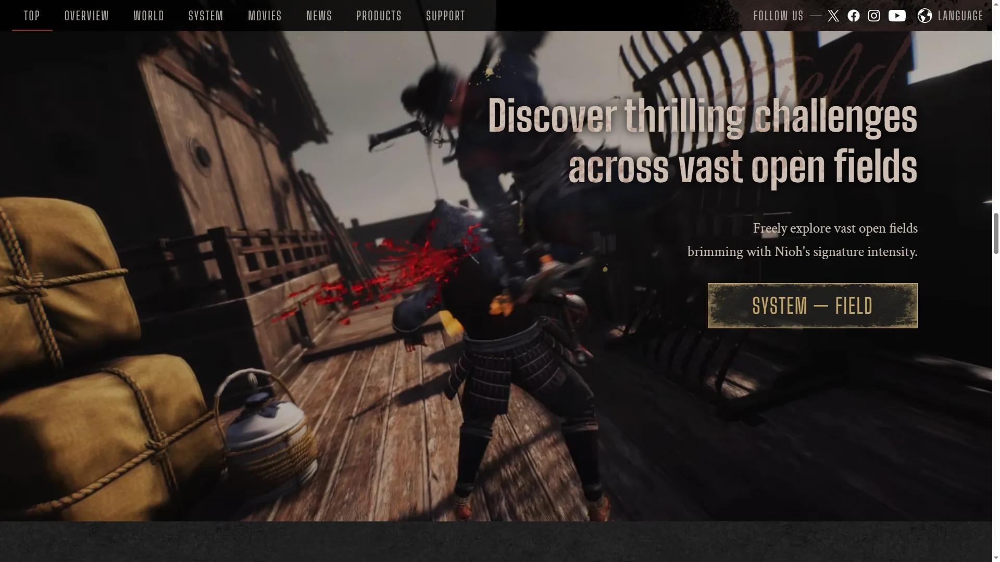
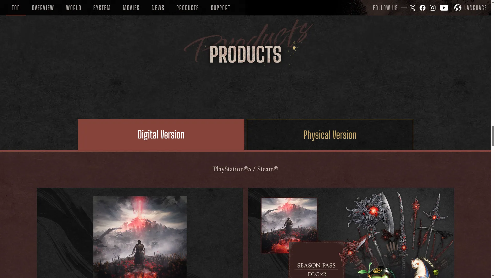
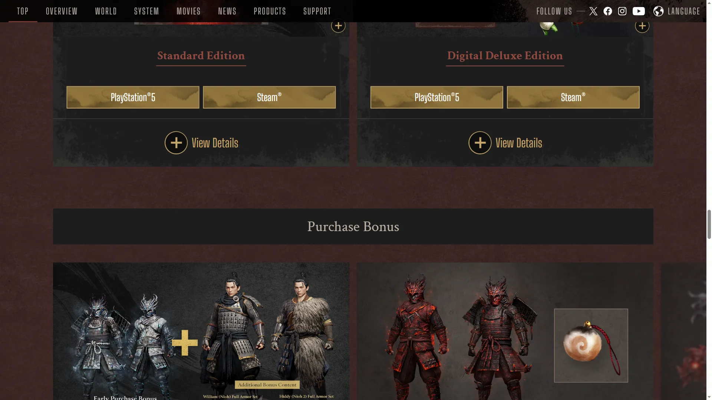

Team Ninja 旗下战国黑暗动作 RPG 新作，延续高压战斗与 Build 深度。







想象一个架空的日本战国——天守阁的瓦片在月光下发着冷蓝色的光，城墙外的竹林里有紫红色的妖气在缓缓升腾。这不是教科书里织田信长统一天下的故事——这是一个妖怪与武士争夺领地的末法之世。街道上偶尔飘过鬼火、半空中有天狗的影子划过、神社的注连绳在发出微弱的金色光芒——那是最后的阴阳结界在挡着什么。你走进这个世界时身体里有一道金色的光——那是你的守护灵，它让你活下来，也让所有妖怪都闻到了你。
你是守护灵宿主——外来者、异人、被命运选中的武者。这个身份让你能做到常人做不到的事：阴阳术让你的刀附上雷火、忍术让你隐入暗影、妖怪技让你直接使用 Boss 的招式——但代价是你每走一步都在被更强的妖怪追猎。从盘踞城郭的巨鬼，到雪山深处的雪女，到妖界异空间里扭曲日式建筑中潜伏的古神——百鬼夜行在你面前逐一现形。
那只在你体内发光的守护灵，它的力量越强你就越接近妖化的边缘；那套你刷了三十小时才凑齐的完美词条铠甲，下一个难度可能就不够用了；那个你本以为是盟友的阴阳师，他的封印术到底在封什么——封妖怪，还是封真相？这不是一个关于英雄讨伐恶魔的故事，是一个关于「人与妖的界线到底在哪里」的故事——守护灵已经在你体内醒了，今晚你打算先讨伐哪座城？
幽玄暗战国 × 阴阳妖怪，是 Team Ninja 把日本战国时代的写实建筑与铠甲和百鬼夜行的妖怪传说融合在一起的暗色和风美学。底色是写实战国——城郭、天守阁、竹林、雪山；变异在于所有场景都被紫红色妖气浸染，常世（妖界入侵的域场）以紫色地面标记。色彩锁定金色守护灵 + 妖气紫红 + 战国铁灰三色组合。整体调性介于《只狼》的暗色和风和《暗黑破坏神》的装备驱动美学之间。
「战国+妖怪」这条视觉线的演化跨越了数百年。1776 年�的鸟山石燕《画图百鬼夜行》系统化了日本妖怪的视觉形象——鬼、天狗、河童、雪女等造型在此定型。1985 年黑�的泽明《乱》把战国美学推到了电影艺术巅峰。2001 年《阴阳师》电影让阴阳术美学进入现代流行文化。2004 年《忍者龙剑传》（Team Ninja）确立了日式硬核动作的品类标准。2011 年《黑暗之魂》定义了高难动作 RPG 的游戏设计范式。2017 年《仁王》初代把「战国+魂系+暗黑刷装」三合一做成了新品类。2025 年《仁王 3》把这条线升级到开放世界——用百鬼夜行填满整张地图，M站 86 分证明这套公式依然有效。
基于体验清单 · 审美偏好 · IP故事三维度综合选出